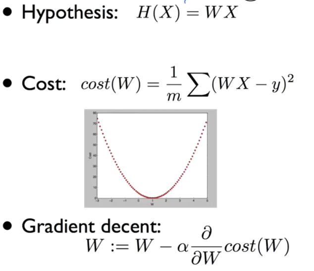

Logistic Regression Classification
Logistic Regression Classification
이진 분류 알고리즘 모델 중 하나인 로지스틱 회기 분류에 대해 알아본다.
Logistic
분류 알고리즘에서 정확도가 높다고 알려진 알고리즘
Regression
지난 학습에서 배운 내용을 다시 한번 돌이켜보면…
- 가설
- 손실 함수
- 경사 하강법 - Gradient decent
- 학습률

Classification
- Spam detection: Spam or not spam
- facebook feed: show or hide
- Credit Card fraudulent Transaction: 신용 카드 사용 패턴 - 도난 사용인지 아닌지
0, 1 encoding
binary claasification이라 부르면 둘 중 하나로 분류하는 경우
주식에서 사야 할 때와 팔아야 할 때를 예측
시험에서 통과하는지 실패하는지
통과, 실패
학습 시간과 합격 케이스를 차트로 그리면 아래와 같은 형태가 나올것이다.
근데 이 부분은 잘 보면 어느 시점을 넘어가면 합격한다는 결과가 나온다.
이 모습은 Linear Regression과 유사해 보인다.

Logistic Hypothesis
근데 기존의 H(x) = Wx + b 의 1차 방정식을 사용 하려니 우리가 원하는 데이터는 0 아니면 1인데 이 사이의 값이 들어오는 문제가 있다.
그래서 우리가 이전에 사용하던 1차 방정식의 값으로 0 혹은 1을 추출하는 공식이 다시 필요하다

이제

Logistic Cost funcion
Linear Regression 에서의 cost 함수

새로운 형태의 cost 함수
우리가 사용하던 방식으로 손실을 계산하면 문제가 생기는 게 아래와 같이 골짜기가 여러개인 형태의 손실률을 보인다.

그래서 Cost 함수 역시 수정해야 한다.
에측값이 0인 경우의 cost 그래프와 예측값이 1인 경우의 cost 그래프를 따로 가야한다.

y 값이 실제로 1인 경우
- 우리 예측 값도 1인 경우 - 이 때 cost는 0에 가깝게 된다.
- 우리 예측이 0인 경우 - 이 떼 cost는 거의 무한대에 가깝게 간다.

y 값이 실제로 0인경우
- 에측값도 0인 경우 - 이 때 cost가 0 이 나온다.
- 예측값이 1 인경우 - 이 때 cost가 무한히 높게 나온다.

y가 1일 때의 손실 그래프와 0일 때의 손실 그래프를 합쳐 보면 똑같이 밥그릇 형태의 모양이 나오고 경사 하강법을 사용할 수 있게 된다.
다시 저 두가지 케이스의 손실 함수를 한줄로 만들면 아래와 같다.

Minimize Cost - Gradient decent algorithm
똑같이 앞선 손실 함수를 사용해 손실을 미분하며 경사 하강법을 이용해 수렴해 나간다.

<실습>
이전 내용….

데이터 타입
x_data = [
[1.,2.],
[2.,3.],
[3.,1.],
[4.,3.],
[5.,3.],
[6.,2.]
]
y_data = [
[0.],
[0.],
[0.],
[1.],
[1.],
[1.]
]
모델
# class
class LogisticModel:
def __init__(self):
self.W = tf.Variable(tf.random.normal([2,1]), name = 'weight')
self.b = tf.Variable(tf.random.normal([1]), name = 'bias')
def __call__(self, X):
return tf.sigmoid(tf.matmul(X, self.W) + self.b)
def cost(self, X, Y):
value = Y * tf.math.log(self(X)) + (1 - Y) * tf.math.log(1 - self(X))
return -tf.reduce_mean(value)
학습 함수
def train(logistic_model, X, Y, steps,lr = 0.001):
# 확률적 경사 하강법 알고리즘 적용
optimizer = tf.optimizers.SGD(lr)
stepList, losses = [], []
for step in range(steps):
with tf.GradientTape() as tape:
loss = logistic_model.cost(X, Y)
gradients = tape.gradient(loss, [logistic_model.W, logistic_model.b])
# gradients에 따라서 Weight와 Bias 업데이트
optimizer.apply_gradients(zip(gradients, [logistic_model.W, logistic_model.b]))
if step % 100 == 0:
print(f'{step} {loss}')
stepList.append(step)
losses.append(loss.numpy())
plt.scatter(stepList, losses)
실행 결과
logistic_model = LogisticModel()
x_tf = tf.constant(x_data)
y_tf = tf.constant(y_data)
train(logistic_model, x_tf, y_tf, 1000, lr = 0.01)

정확도
pred = tf.cast(logistic_model(x_data) > 0.5, dtype=tf.float32)
accuracy = tf.reduce_mean(tf.cast(tf.equal(pred, y_data), dtype = tf.float32))
print(accuracy.numpy())
===> 0.8333333
학습률을 올리거나 스탭을 올리면 정확도가 1까지도 올라간다.
<실습>
이번에는 당료병 진단 데이터를 가지고 판단하도록 한다.

데이터 파일은 여기서 받는다
파일을 읽고 데이터 생성
xy = np.loadtxt('data-03-diabetes.csv',delimiter=',',dtype=np.float32)
x_data = xy[:, 0:-1]
y_data = xy[:, [-1]]
x의 데이터가 759 * 8 의 사이즈라 모델을 수정해야 한다.
# class
class LogisticModel:
def __init__(self):
self.W = tf.Variable(tf.random.normal([8,1]), name = 'weight')
self.b = tf.Variable(tf.random.normal([1]), name = 'bias')
def __call__(self, X):
return tf.sigmoid(tf.matmul(X, self.W) + self.b)
def cost(self, X, Y):
value = Y * tf.math.log(self(X)) + (1 - Y) * tf.math.log(1 - self(X))
return -tf.reduce_mean(value)
W의 shape를 수정했다.
self.W = tf.Variable(tf.random.normal([8,1]), name = 'weight')
학습 결과
logistic_model = LogisticModel()
x_tf = tf.constant(x_data)
y_tf = tf.constant(y_data)
train(logistic_model, x_tf, y_tf, 1000, lr = 0.01)
pred = tf.cast(logistic_model(x_data) > 0.5, dtype=tf.float32)
accuracy = tf.reduce_mean(tf.cast(tf.equal(pred, y_data), dtype = tf.float32))
print(accuracy)

정확도
pred = tf.cast(logistic_model(x_data) > 0.5, dtype=tf.float32)
accuracy = tf.reduce_mean(tf.cast(tf.equal(pred, y_data), dtype = tf.float32))
print(accuracy.numpy())
===> 0.71673256